Example Gallery
This gallery provides some examples.
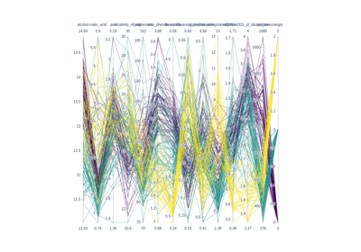
Parallel Coordinates
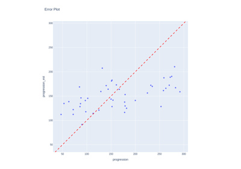
Plot Residuals
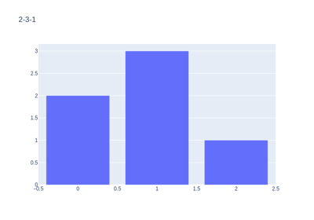
Multi-Plots for Sphinx
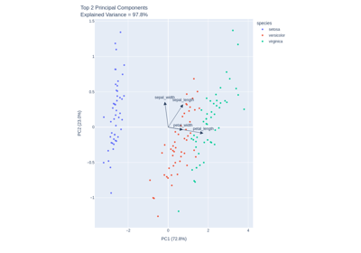
Principal Component Analysis
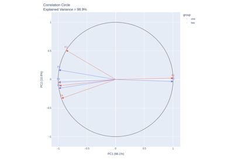
Compare Multiple N-D datasets
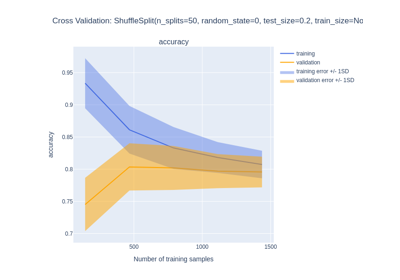
Learning Curve
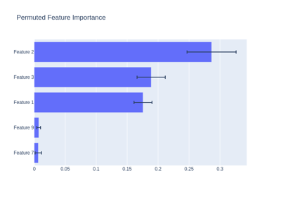
Feature importances with a forest of trees
Feature importances with a forest of trees
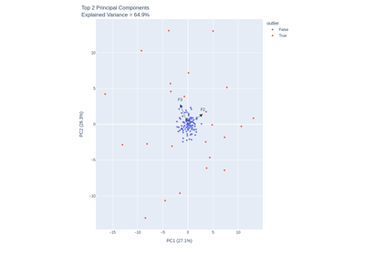
Multivariate Outlier Detection
Multivariate Outlier Detection
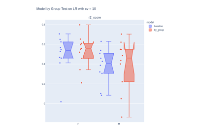
Category Feature Analysis
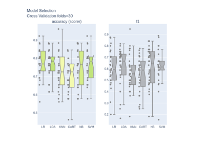
Model Selection
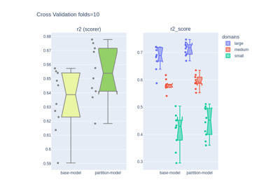
Partition Estimator